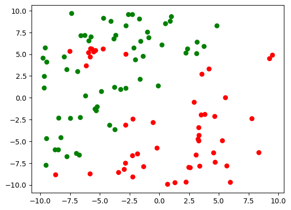
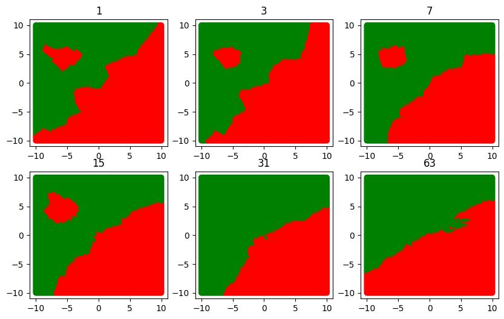
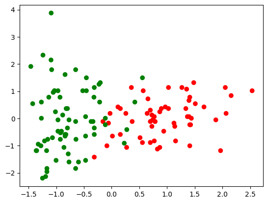
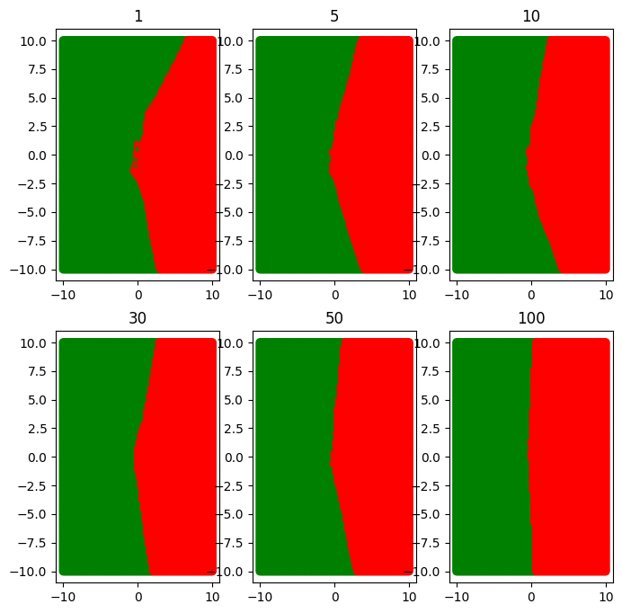
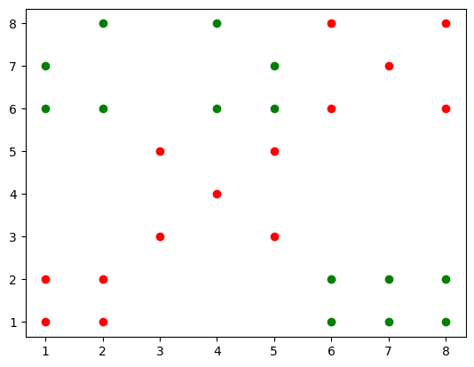
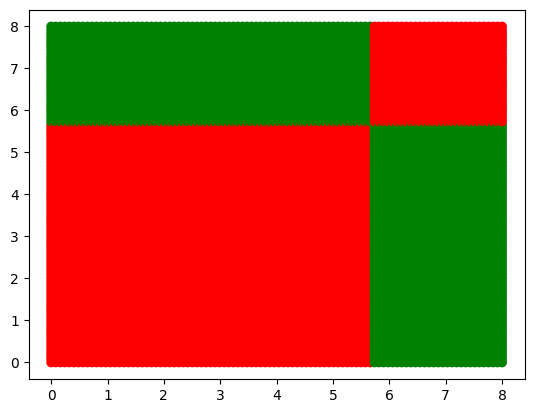

import numpy as np
import matplotlib.pyplot as pltWeek 7: Classification - K-NN, Decision tree
Colab Link: Click here!
KNN
Generating the dataset
rng = np.random.default_rng(seed = 1001)
X = rng.uniform(-10, 10, (100, 2))
y = np.int32(np.zeros(X.shape[0]))
y[X[:, 1] > X[:, 0]] = 1
X = np.concatenate((X,
rng.multivariate_normal([-5, 5], np.eye(2), 10)),
axis = 0)
y = np.concatenate((y, np.int32(np.zeros(10))))Visualize the dataset
c = np.array(['red', 'green'])
plt.scatter(X[:, 0], X[:, 1], c = c[y]);
Predict the class for a test point
def predict(X, y, x_test, k = 3):
dist = np.linalg.norm(X - x_test.reshape(1, 2), axis = 1)
nearest_k = np.argsort(dist)[: k]
voter = y[nearest_k]
if sum(voter) > len(voter) / 2:
return 1
else:
return 0
c[predict(X, y, np.array([-3, -2]), 10)]'green'Decision boundary for various values of k
def boundary(k):
x = np.linspace(-10, 10, 100)
floor = [ ]
color = [ ]
for i in range(x.shape[0]):
for j in range(x.shape[0]):
floor.append([x[i], x[j]])
color.append(c[predict(X, y, np.array([x[i], x[j]]), k)])
floor = np.array(floor)
plt.scatter(floor[:, 0], floor[:, 1], c = color);
plt.title(k)
plt.figure(figsize=(10, 7))
for ind, k in enumerate([1, 3, 7, 15, 31, 63]):
plt.subplot(2, 3, ind + 1)
boundary(k)
Real World Dataset: Wine Dataset
In this section, we will explore the Wine dataset, which is a real-world dataset used for classification tasks. The dataset contains various attributes related to wine samples, and our goal is to classify these samples into two categories: Class 0 and Class 1.
Dataset Description
Features: The dataset includes several features, but for this analysis, we will focus on two specific attributes: ‘proline’ and ‘hue.’ These attributes represent different characteristics of the wine samples.
Labels: The target variable, denoted as ‘y,’ assigns each sample to one of two classes, Class 0 or Class 1.
from sklearn.datasets import load_wine
X, y = load_wine(return_X_y=True, as_frame=True)
X, y = X[y < 2], y[y < 2]
X = X[['proline', 'hue']]
X = X.to_numpy()Data Preprocessing
Before using the dataset, we perform some data preprocessing steps to standardize the features. Standardization is a common practice in machine learning to ensure that all features have the same scale. This can improve the performance of our models.
from sklearn.preprocessing import StandardScaler
std_scaler = StandardScaler()
X = std_scaler.fit_transform(X)
c = np.array(['red', 'green'])
plt.scatter(X[:, 0], X[:, 1], c = c[y]);
Predict the class for a test point
c[predict(X, y, np.array([-0.2, 0]), 5)]'green'Decision boundary for various values of k
plt.figure(figsize=(10, 7))
for ind, k in enumerate([1, 5, 10, 30, 50, 100]):
plt.subplot(2, 3, ind + 1)
boundary(k)
Decision Trees
Consider a dataset X with 28 points that lie in a 2D space. The labels for each point is given by the vector y.
X = np.array([[6, 1], [7, 1], [8, 1], [6, 2], [7, 2],
[8, 2], [1, 6], [1, 7], [2, 6], [2, 8],
[4, 6], [4, 8], [5, 6], [5, 7], [1, 1],
[2, 1], [1, 2], [2, 2], [3, 3], [5, 3],
[4, 4], [3, 5], [5, 5], [6, 6], [8, 6],
[7, 7], [6, 8], [8, 8]]).T
y = np.array([1, 1, 1, 1, 1, 1, 1,
1, 1, 1, 1, 1, 1, 1,
-1, -1, -1, -1, -1, -1, -1,
-1, -1, -1, -1, -1, -1, -1])Visualize the dataset
plt.scatter(X[0, y==1], X[1, y==1], c="green")
plt.scatter(X[0, y==-1], X[1, y==-1], c="red")
plt.show()
The entropy of a node is given by, E=-p\log p-( 1-p)\log( 1-p)
def entropy(p):
if p == 0 or p == 1:
return 0
return -p * np.log2(p) - (1 - p) * np.log2(1 - p)The information gain is given by, IG=E - [\gamma * E_{l} + (1 - \gamma) * E_r]
def IG(E, El, Er, gamma):
return E - gamma * El - (1 - gamma) * Erdef best_split(X, y):
min_val, max_val = X.min(), X.max()
vals = np.linspace(min_val, max_val, 10)
p = X[y == 1].shape[0] / X.shape[0]
E = entropy(p)
ig_best, value_best, feat_best = 0, 0, 0
for val in vals:
for feat in [0, 1]:
left = y[X[:, feat] < val]
right = y[X[:, feat] >= val]
gamma = left.shape[0] / X.shape[0]
q = r = 0
if left.shape[0] != 0:
q = left[left == 1].shape[0] / left.shape[0]
if right.shape[0] != 0:
r = right[right == 1].shape[0] / right.shape[0]
El = entropy(q)
Er = entropy(r)
ig = E - gamma * El - (1 - gamma) * Er
assert ig >= 0
if ig > ig_best:
ig_best = ig
value_best = val
feat_best = feat
return feat_best, value_best, ig_bestX = X.T
tree = dict()
def grow_tree(X, y, key):
p = X[y == 1].shape[0] / X.shape[0]
E = entropy(p)
if E <= 0.2:
label = 0
if y[y == 1].shape[0] / y.shape[0] > 0.5:
label = 1
tree[key] = {'state': 'leaf', 'label': label}
return
feat_best, val_best, _ = best_split(X, y)
tree[key] = {'state': 'internal', 'question': (feat_best, val_best)}
left_ind = X[:, feat_best] < val_best
right_ind = X[:, feat_best] >= val_best
left_X = X[left_ind]
left_y = y[left_ind]
right_X = X[right_ind]
right_y = y[right_ind]
grow_tree(left_X, left_y, 2 * key + 1)
grow_tree(right_X, right_y, 2 * key + 2)
grow_tree(X, y, 0)
tree{0: {'state': 'internal', 'question': (1, 5.666666666666667)},
1: {'state': 'internal', 'question': (0, 5.666666666666667)},
3: {'state': 'leaf', 'label': 0},
4: {'state': 'leaf', 'label': 1},
2: {'state': 'internal', 'question': (0, 5.666666666666667)},
5: {'state': 'leaf', 'label': 1},
6: {'state': 'leaf', 'label': 0}}Predict label for a test point
def predict(tree, x, ind):
if tree[ind]['state'] == 'leaf':
return tree[ind]['label']
feat, val = tree[ind]['question']
if x[feat] < val:
ind = 2 * ind + 1
return predict(tree, x, ind)
else:
ind = 2 * ind + 2
return predict(tree, x, ind)
c[predict(tree, [3, 4], 0)]'red'Visualize the decision boundary
x = np.linspace(0, 8, 100)
floor = [ ]
color = [ ]
for i in range(x.shape[0]):
for j in range(x.shape[0]):
floor.append([x[i], x[j]])
color.append(c[predict(tree, [x[i], x[j]], 0)])
floor = np.array(floor)
plt.scatter(floor[:, 0], floor[:, 1], c = color);